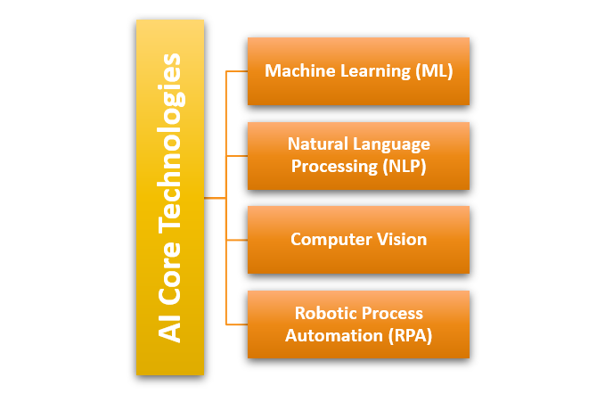
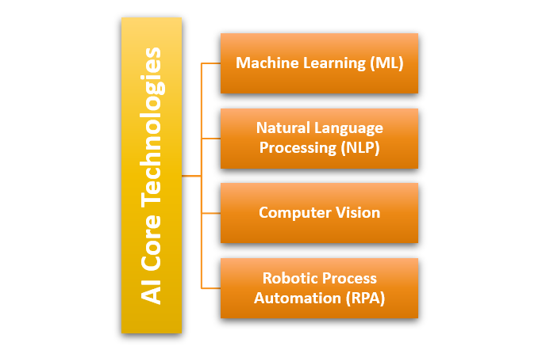
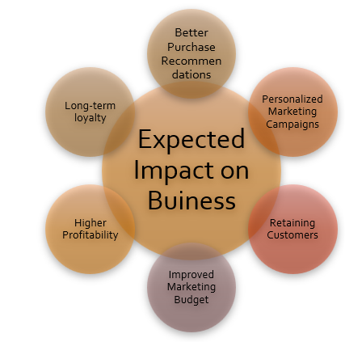
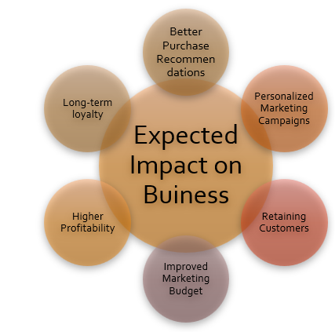
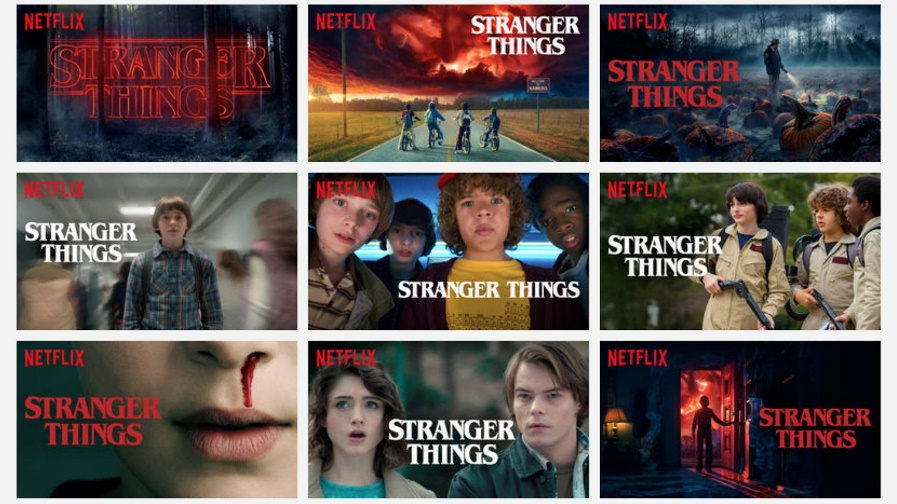
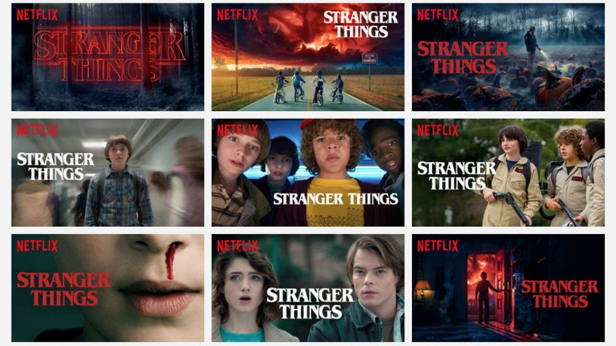

Aagaard, A. and Tucci, C., 2024. AI-driven business model innovation: pioneering new frontiers in value creation. In Business Model Innovation: Game Changers and Contemporary Issues (pp. 295-328). Cham: Springer International Publishing.
Abishek, M.N. and Judi, E.K., 2025. A Study on Exploring Consumer Engagement with AI-Driven Experiences on Netflix Streaming Platform. In International Conference on Artificial Intelligence in Commerce and Management (pp. 93-100).
Adedokun, A., 2024. Global ai regulatory landscape challenges, trends, and future outlook. Trends, and Future Outlook (February 29, 2024).
Afrin, S., Roksana, S. and Akram, R., 2024. Ai-enhanced robotic process automation: A review of intelligent automation innovations. IEEE Access.
Afzal, S., Ghani, S., Hittawe, M.M., Rashid, S.F., Knio, O.M., Hadwiger, M. and Hoteit, I., 2023. Visualization and visual analytics approaches for image and video datasets: A survey. ACM Transactions on Interactive Intelligent Systems, 13(1), pp.1-41.
Alkatheiri, M.S., 2022. Artificial intelligence assisted improved human-computer interactions for computer systems. Computers and Electrical Engineering, 101, p.107950.
Bala, B. and Behal, S., 2024, October. A brief survey of data preprocessing in machine learning and deep learning techniques. In 2024 8th International Conference on I-SMAC (IoT in Social, Mobile, Analytics and Cloud)(I-SMAC) (pp. 1755-1762). IEEE.
Baranidharan, S. and Kulkarni, S., 2025. Beyond binge-watching: How Netflix can adapt its digital marketing strategy for long-term success. In Cases on Effective Digital Marketing for Competitive Organizations (pp. 43-90). IGI Global Scientific Publishing.
Choudhary, E., Narayanan, S. and Khan, F., 2024. Legal and regulatory landscape. In AI Healthcare Applications and Security, Ethical, and Legal Considerations (pp. 222-239). IGI Global.
Chowdhary, K., 2020. Natural language processing. Fundamentals of artificial intelligence, pp.603-649.
Clinehens, J., 2024. Why Netflix thumbnails are a billion dollar business [online]. Choice Hacking. Available at: https://www.choicehackingideas.com/p/netflix-thumbnails-billion-dollar-business (Accessed: 21 October 2025).
Cui, Y., 2024. Research on Netflix’s Expansion and Competitive Strategies in the Global Markets. Business, Economics and Management PGMEE, 2024.
Desai, A., 2025. AI-Driven Customer Segmentation in Retail Industry. Available at SSRN 5281831.
Dezeen, 2017. Netflix targets film artwork depending on users' viewing habits [online]. Available at: https://www.dezeen.com/2017/12/20/netflix-targets-film-artwork-depending-users-viewing-habits-design-technology/ (Accessed: 21 October 2025).
Fiiwe, J.L., Egele, A.E., Ozo, J.U. and Obasiabara, B.O., 2023. Customer relationship management and customers repeat purchase behavior in Nigeria. Scholars Journal of Economics, Business and Management, 1, pp.19-28.
Fosso Wamba, S., Queiroz, M.M., Guthrie, C. and Braganza, A., 2022. Industry experiences of artificial intelligence (AI): benefits and challenges in operations and supply chain management. Production planning & control, 33(16), pp.1493-1497.
Goel, K., 2024. Lead Prioritization: A guide to maximizing sales using analytics and AI in Real Estate. The Eastasouth Journal of Information System and Computer Science, 1(03), pp.176-198.
Guendouz, T., 2023. Artificial intelligence-powered customer experience management (moving from mass to hyper-personalization in light of relationship marketing).
Guru, S.K., 2023. Influence of big data analytics on business intelligence. In Analytics enabled decision making (pp. 45-58). Singapore: Springer Nature Singapore.
Ip, K., 2025. From prediction to proactive retention: AI-enabled dynamic and individualised customer churn management. Applied Marketing Analytics, 11(2), pp.143-151.
Krakowski, S., Luger, J. and Raisch, S., 2023. Artificial intelligence and the changing sources of competitive advantage. Strategic Management Journal, 44(6), pp.1425-1452.
Li, L., 2020. Education supply chain in the era of Industry 4.0. Systems Research and Behavioral Science, 37(4), pp.579-592.
Mishra, D., Mishra, R.K. and Agarwal, R., 2024. Recent trends in artificial intelligence and its applications. Artificial Intelligence-Trends and Applications, 1, pp.73-106.
Mungoli, N., 2023. Scalable, distributed AI frameworks: leveraging cloud computing for enhanced deep learning performance and efficiency. arXiv preprint arXiv:2304.13738.
Neglur, I.S. and PS, R., 2024. Keeping viewers hooked: Netflix’s innovative strategies for reducing churn. Journal of Information Technology Teaching Cases, p.20438869241296895.
Olli, P., 2024. Utilizing AI in customer support work.
Paramasivan, P., Rajest, S.S., Chinnusamy, K., Regin, R. and John Joseph, F.J. eds., 2024. Cross-industry AI applications. IGI Global.
Rafieian, O. and Yoganarasimhan, H., 2023. AI and personalization. Artificial intelligence in marketing, pp.77-102.
Sarkar, S., 2025. Development of a Hybrid Recommendation System Using Collaborative Filtering and Content-Based Filtering Techniques. IRE Journals, 8(11).
Siddiqui, A., 2024. The Impact of Artificial Intelligence on Business Operation: Current State, Future Opportunities and Challenges. International Journal of Management (IJM), 15(4).
Sugureddy, A.R., 2023. Enhancing data governance and privacy AI solutions for lineage and compliance with CCPA, GDPR. Journal ID, 9339, p.1263.
Tabianan, K., Velu, S. and Ravi, V., 2022. K-means clustering approach for intelligent customer segmentation using customer purchase behavior data. Sustainability, 14(12), p.7243.
Taherdoost, H., 2023. Machine learning algorithms: features and applications. In Encyclopedia of Data Science and Machine Learning (pp. 938-960). IGI Global.
 


 

 
